FINDING 01
AI adoption increased substantially
Across the 27-country analytical population, enterprise AI adoption increased by an average of 12.49 percentage points between 2023 and 2025.
Exploring the relationship between economic development and technology adoption across the European Union.
Organisations investing in digital transformation need to understand how technology adoption differs between markets and how those patterns relate to broader economic conditions. This project examines publicly available European data to identify measurable patterns in economic development, enterprise technology adoption, digital capability and the ICT workforce.
The analysis focuses on association rather than causation. The purpose is to identify patterns that can support further investigation and evidence-based decision-making.
The project uses five Eurostat datasets covering economic development, enterprise technology adoption, digital skills and the ICT workforce.
GDP per capita measured in purchasing power standards (PPS) per inhabitant.
Enterprise adoption of artificial intelligence and paid cloud-computing services.
Individuals with at least basic digital skills and ICT specialists as a percentage of employment.
Raw Eurostat TSV files were preserved separately. Selected variables were filtered to the EU-27 analytical population and converted into structured CSV datasets.
2025 values, 2023–2025 changes and Pearson correlations were calculated from the cleaned data.
Missing values and Eurostat status flags were checked before the analytical datasets were produced.
The cleaned analytical dataset contains 27 EU countries. The selected 2023 and 2025 indicators contain no missing analytical values in the final dataset.
| Indicator | Highest, 2025 | Lowest, 2025 |
|---|---|---|
| GDP per capita (PPS) | Luxembourg — 99,621.3 | Bulgaria — 28,332.0 |
| AI adoption | Denmark — 42.03% | Romania — 5.21% |
| Cloud adoption | Finland — 79.21% | Bulgaria — 17.83% |
| Digital skills | Netherlands — 83.61% | Romania — 31.84% |
| ICT specialists | Sweden — 8.9% | Greece — 2.5% |
Across the 27-country analytical population, enterprise AI adoption increased by an average of 12.49 percentage points between 2023 and 2025.
Enterprise cloud adoption increased by an average of 5.72 percentage points over the same period, although the magnitude of change varied considerably between countries.
Digital-skills prevalence increased by an average of 3.40 percentage points, with country-level changes differing substantially.
GDP per capita had positive Pearson correlations with AI adoption, cloud adoption, digital skills and ICT specialists in the 2025 cross-country data. These relationships describe association, not causation.
Pearson correlation was used to examine linear association between GDP per capita and each technology-related indicator across the 27 countries in 2025.
Interpretation: These correlations indicate positive statistical associations within this cross-sectional dataset. They do not demonstrate that economic development causes technology adoption, or that technology adoption causes higher GDP per capita.
The visual analysis combines country comparisons, change analysis and relationship plots.
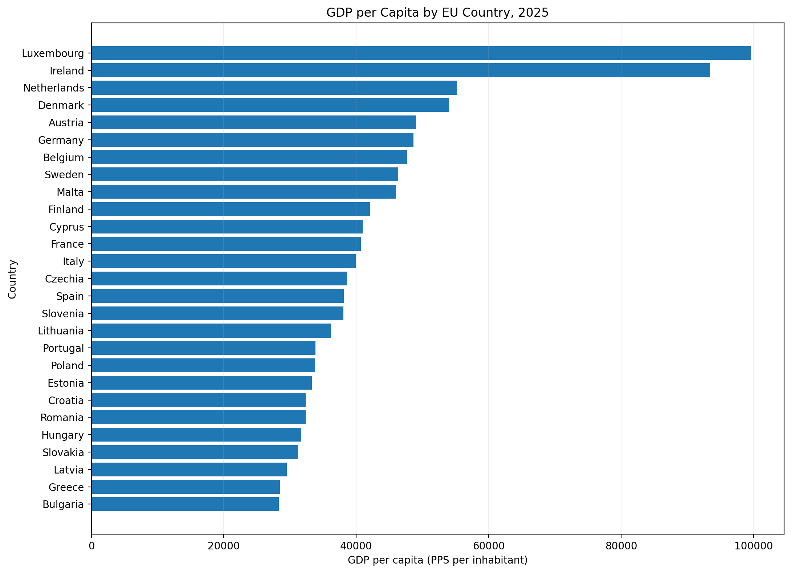
GDP per capita across EU countries in 2025.
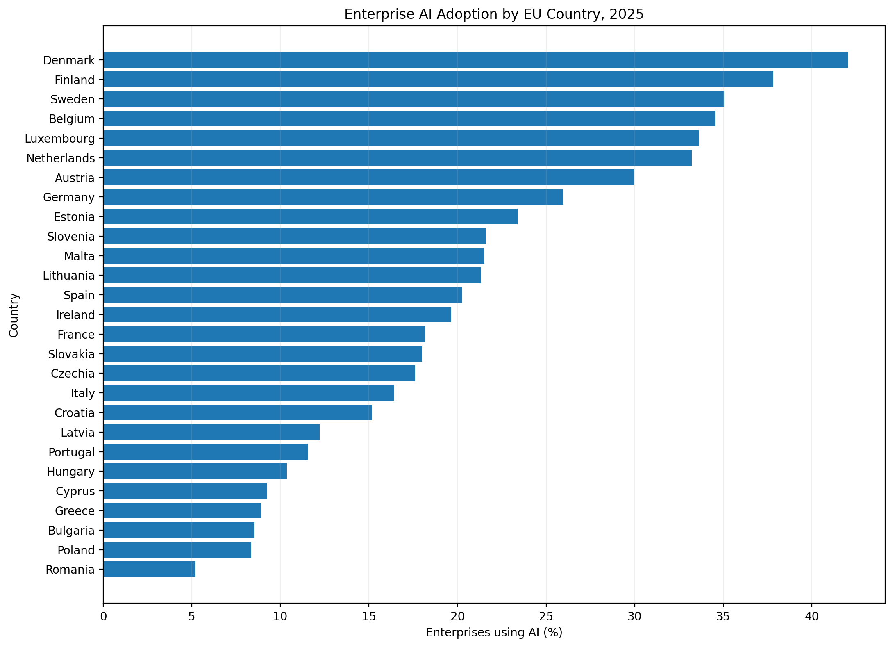
Enterprise AI adoption across EU countries.
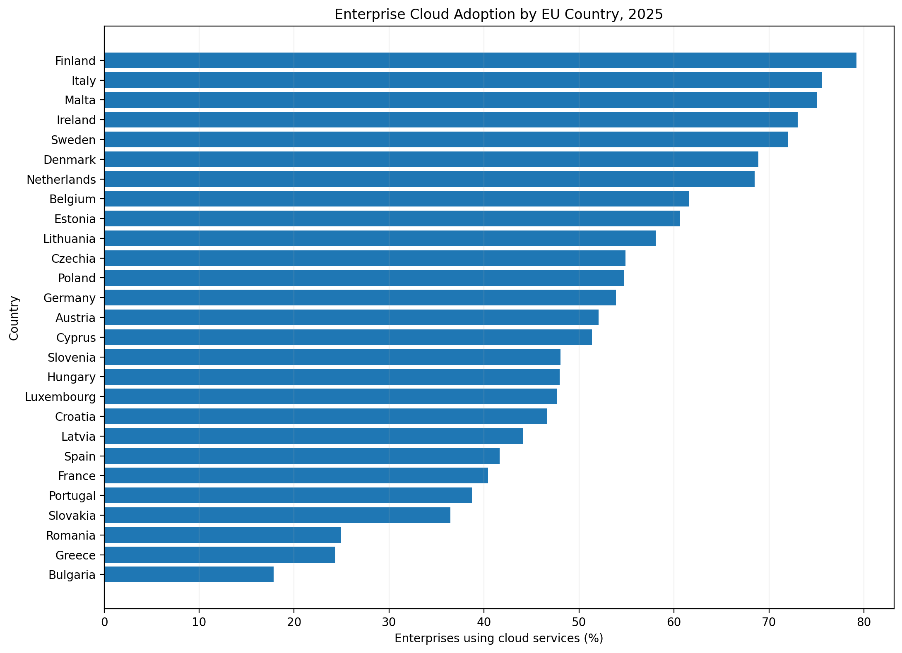
Enterprise use of paid cloud services.
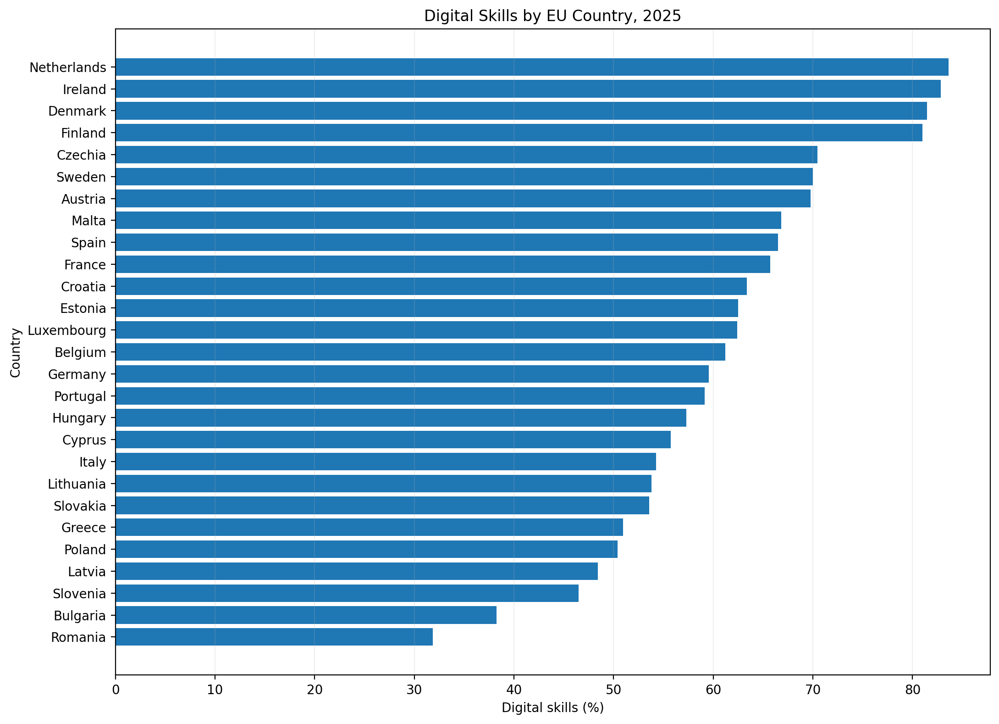
Share of individuals with at least basic digital skills.
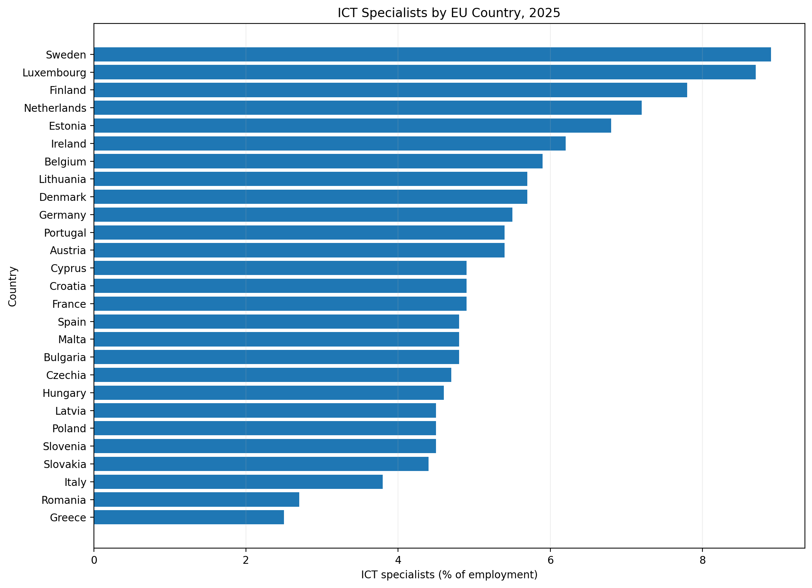
ICT specialists as a share of employment.
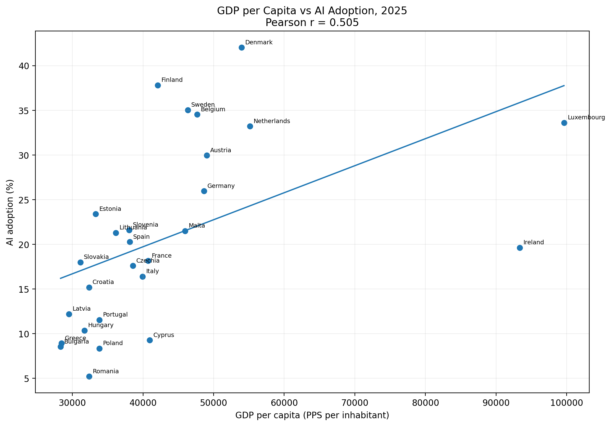
Cross-country relationship between GDP per capita and enterprise AI adoption.
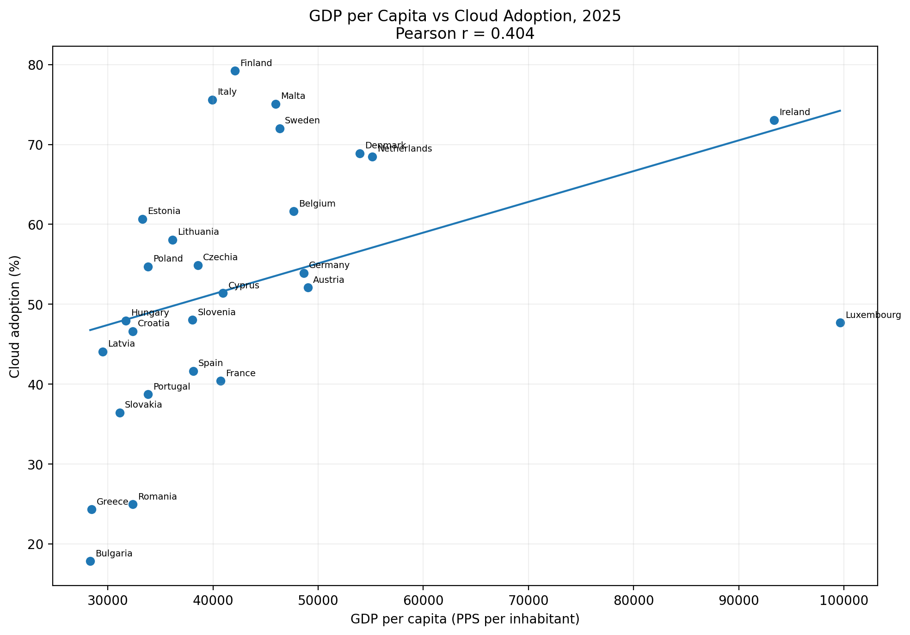
Cross-country relationship between GDP per capita and enterprise cloud adoption.
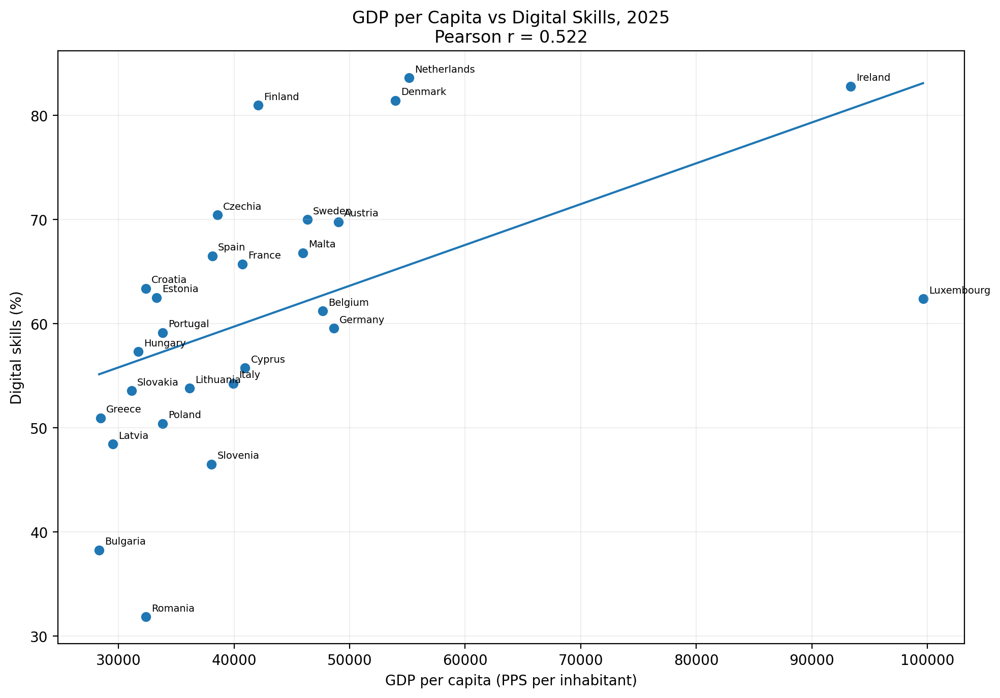
Cross-country relationship between GDP per capita and digital-skills prevalence.
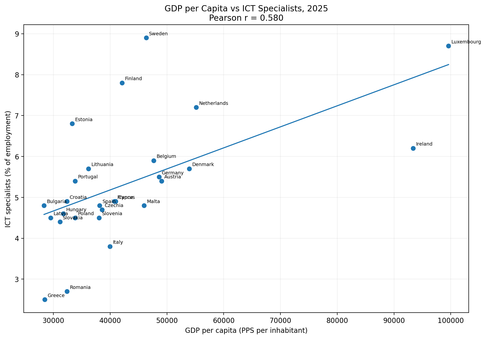
Cross-country relationship between GDP per capita and ICT specialists.
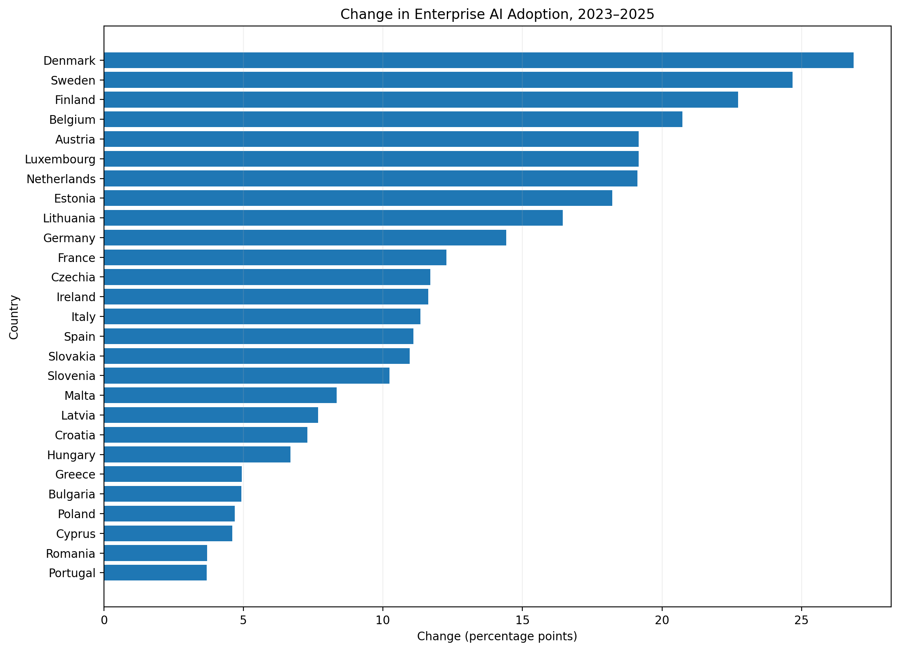
Change in enterprise AI adoption from 2023 to 2025.
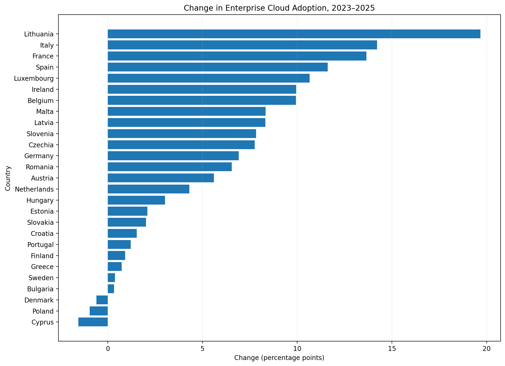
Change in enterprise cloud adoption from 2023 to 2025.
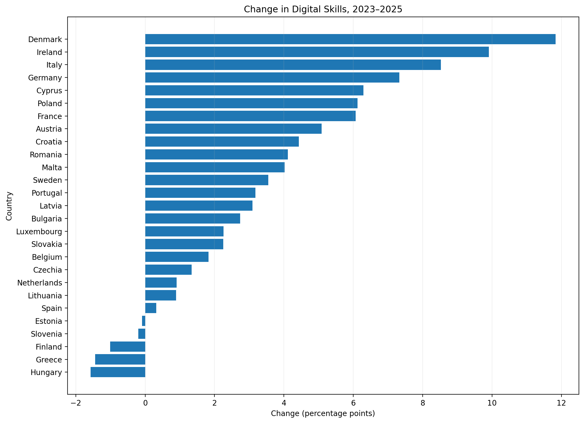
Change in digital-skills prevalence from 2023 to 2025.
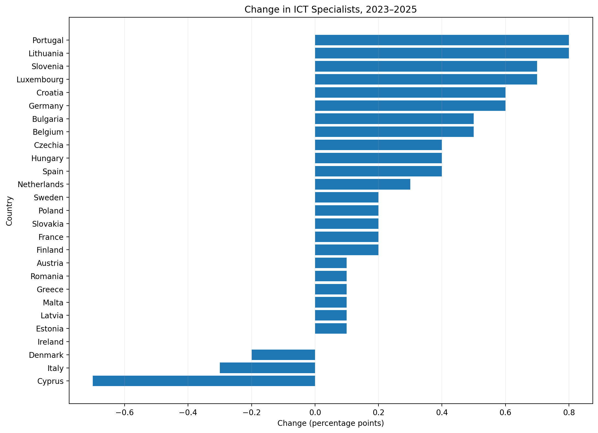
Change in ICT specialists as a share of employment.
Official source for the economic and digital indicators used in the analysis.
Used to structure analytical queries, compare countries, calculate changes and examine correlations.
Used for reproducible visualisation generation from the cleaned master dataset.
The analysis uses observational cross-country data. Correlations should therefore be interpreted as associations rather than causal effects. GDP per capita is a macroeconomic indicator and should not be interpreted as an individual's income or wealth. Eurostat status flags and methodological notes are retained in the underlying analytical files. The analysis also covers only the selected indicators and the 2023–2025 comparison period.
All primary datasets used in this project originate from Eurostat / European Commission.